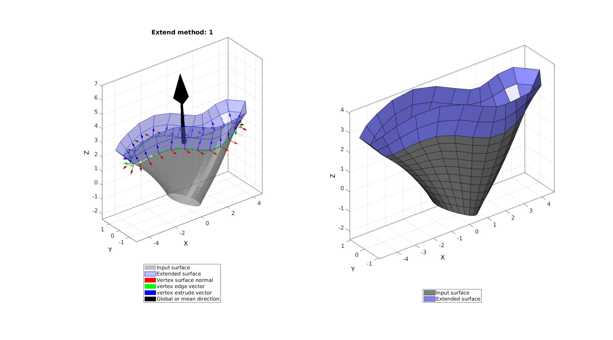
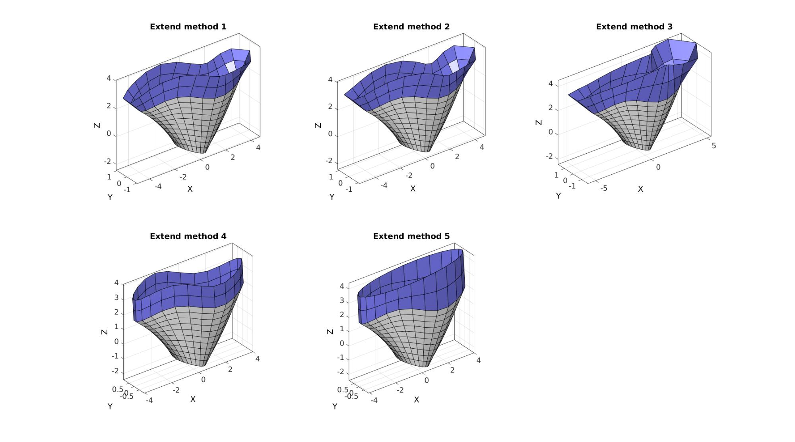

patchExtend
Below is a basic demonstration of the features of the patchExtend function.
Contents
Syntax
[Fn,Vn]=patchExtend(F,V,Eb,optionStruct);
Description
This function extends the input surface geometry allong the edges Eb using the local (or averaged) surface direction at these edges.
The input consists of: the input surface (patch) data, defined by the faces F and vertices V, the boundary edges Eb to extend the surface over, and an optionStruct structure containing all remaining and optional inputs.
The input structure may contain the following fields:
optionStruct.extendDistance -> %The distance to extend the surface by
optionStruct.numSteps -> The number of steps to use in the extension direction, default is the distance divided by the average edge length.
optionStruct.plotOn -> option to turn on/off plotting, default is 0
optionStruct.meshType -> the mesh type ('tri' or 'quad'), default is 'tri'.
optionStruct.globalDirection -> the global (should be seen as mean) direction for extension, default is empty ([]) and is instead based on the input mesh directions
optionStruct.extendMethod=1; %Method to use for extruding (see below), default is 1.
Five extend methods have been implemented (default is 1):
extendMethod=1 -> Equal offset allong local direction extendMethod=2 -> Equal offset wrst mean direction allong local direction extendMethod=3 -> Varying offset allong local ending planar wrt mean direction extendMethod=4 -> Equal offset allong mean direction extendMethod=5 -> Equal offset allong mean direction ending planar wrt mean direction
Examples
clear; close all; clc;
Example 1; Extending a surface
A reasonably complicated example is formed by creating a surface with a non-planar boundary edge. This example serves to highlight the various options and potential issues that might arrize from "convergent" edge vectors.
The example here creates a warped cylindrical surface. The surface is warped by creating a spatialy varying scalling in the X-direction and a distortion in the Z-direction.
% Defining a cylinder inputStruct.cylRadius=1; inputStruct.numRadial=25; inputStruct.cylHeight=4; inputStruct.numHeight=11; inputStruct.meshType='quad'; [F,V]=patchcylinder(inputStruct); % Derive patch data for a cylinder %Adjust shape of the cylinder in X-direction w=V(:,3); w=w-min(w(:)); w=w./max(w(:)); %Weight to use for warping w=(3*w+1); %Linear scale V(:,1)=V(:,1).*w; %Warp in X-direction %Adjust shape in the Z-direction w=V(:,1); w=w-min(w(:)); w=w./max(w(:)); %Weight to use for warping w=w*2*pi; %Metric to use in warping V(:,3)=V(:,3)+0.6*sin(w); %Warp in Z-direction
Getting surface top boundary edges
Eb=patchBoundary(F,V); %All boundary edges (including bottom) VE=patchCentre(Eb,V); %Edge centre coordinates logicTop=VE(:,3)>0; %Logic for top edges (Z-coordinate above 0) Eb=Eb(logicTop,:); %Set of edges at the top
Extending the surface. The
% Defing input parameters optionStruct.numSteps=[]; optionStruct.plotOn=1; optionStruct.meshType=[]; optionStruct.globalDirection=[]; optionStruct.extendDistance=1.5; %Extend distance optionStruct.extendMethod=1; %Method to use for extruding [Fn,Vn]=patchExtend(F,V,Eb,optionStruct);
Using different extend methods
The loop below is for each method available.
optionStruct.numSteps=[]; optionStruct.plotOn=0; optionStruct.meshType=[]; optionStruct.globalDirection=[]; optionStruct.extendDistance=1.5; %Extend distance cFigure; for q=1:1:5 optionStruct.extendMethod=q; %Method to use for extruding [Fn,Vn]=patchExtend(F,V,Eb,optionStruct); subplot(2,3,q); hold on; title(['Extend method ',num2str(q)]); gpatch(F,V,'w','k',1); gpatch(Fn,Vn,'bw','k',1); axisGeom; camlight headlight; end drawnow;

GIBBON www.gibboncode.org
Kevin Mattheus Moerman, gibbon.toolbox@gmail.com
GIBBON footer text
License: https://github.com/gibbonCode/GIBBON/blob/master/LICENSE
GIBBON: The Geometry and Image-based Bioengineering add-On. A toolbox for image segmentation, image-based modeling, meshing, and finite element analysis.
Copyright (C) 2019 Kevin Mattheus Moerman
This program is free software: you can redistribute it and/or modify it under the terms of the GNU General Public License as published by the Free Software Foundation, either version 3 of the License, or (at your option) any later version.
This program is distributed in the hope that it will be useful, but WITHOUT ANY WARRANTY; without even the implied warranty of MERCHANTABILITY or FITNESS FOR A PARTICULAR PURPOSE. See the GNU General Public License for more details.
You should have received a copy of the GNU General Public License along with this program. If not, see http://www.gnu.org/licenses/.